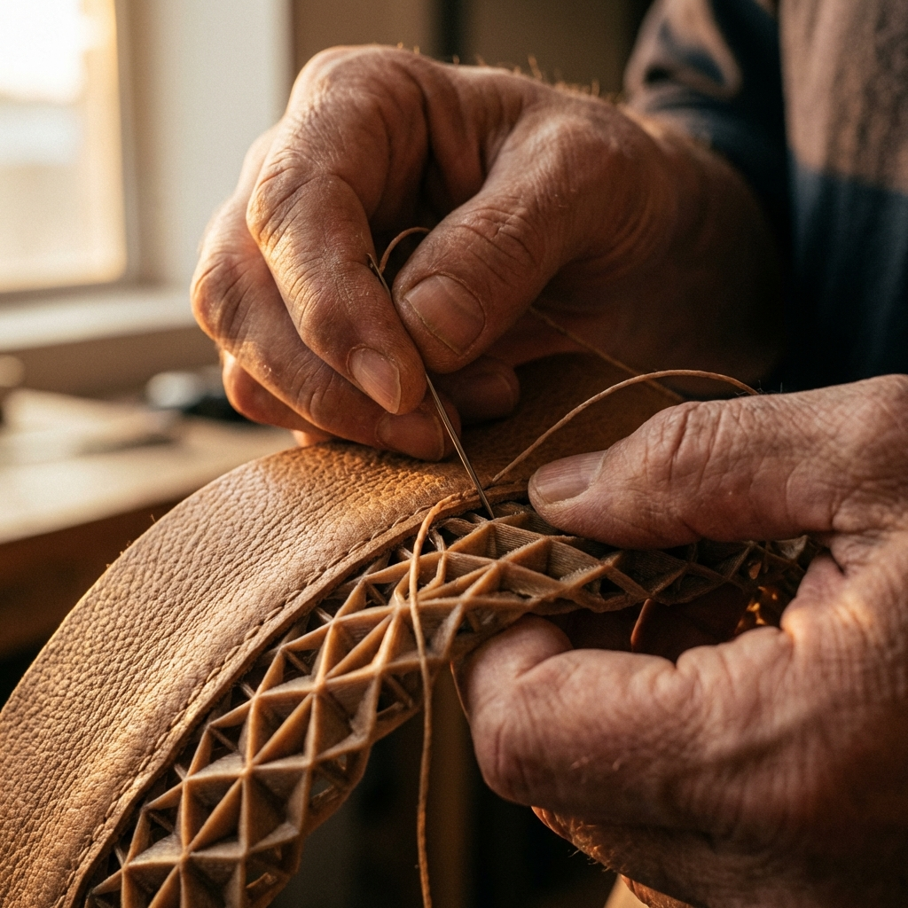

ARSENAL 愛森諾推薦專文：一把好剪刀，從日本不鏽鋼到 MIT 製造把日常效率一次剪順
剪刀看起來是小工具，但真正好用與否，往往決定了廚房、收納與辦公日常到底是俐落還是卡手。這篇 ARSENAL 愛森諾推薦專文，從材質、做工到三種不同用途的剪刀配置，整理出更值得投資的一套選擇邏輯。

為什麼一把剪刀值得認真挑
剪刀是那種平常不太會被特別討論，但只要不好用就會立刻讓人煩躁的工具。廚房裡剪雞腿、拆包裝、修花枝腳，辦公桌上拆快遞、剪膠帶、修標籤，居家收納時處理束帶、紙箱與各種雜物，幾乎都會遇到它。
真正好用的剪刀，不只是『剪得斷』而已，而是剪切時穩不穩、手感順不順、遇到不同材質會不會打滑，以及長時間用下來刀身與握把是否仍然可靠。也因此，比起一直買便宜但不耐用的替代品，直接挑一把材料與工藝都比較到位的剪刀，長期反而更省事。
- 剪刀是高頻工具，不好用時日常摩擦感會非常明顯。
- 材質、刀刃設計與握把施力感，會直接影響使用效率。
- 真正值得投資的是耐用度與穩定手感，不只是價格。
主訴求為什麼成立：日本不鏽鋼與 MIT 台灣製造的價值
ARSENAL 愛森諾這次最清楚的主訴求，就是『嚴選日本不鏽鋼，MIT 台灣製造』。這不只是文案包裝，而是把使用者最在意的兩件事放在一起看：第一，刀身材料要耐用、穩定；第二，製造品質要能落在可靠而可持續使用的水準上。
依官方商品頁資訊，多功能萬用剪與長刃家用剪都以日本不鏽鋼為主打，不沾事務剪則明確標示使用日本高級 420J2 不鏽鋼。再加上 100% MIT 台灣製造的訴求，這組合傳遞的不是空泛高級感，而是讓消費者在買一把天天會用到的工具時，更有理由相信它的品質與耐用邏輯。
- 日本不鏽鋼：重點在耐用度、穩定度與長期使用感。
- MIT 台灣製造：代表製造端的完成度與品質信任感。
- 對日常工具來說，材料與產地並不是附加值，而是核心判斷。
第一把先看萬用度：ARSENAL 多功能萬用剪
如果你希望先買一把真正能扛住大多數家庭場景的剪刀，多功能萬用剪會是最容易理解的一款。依官方頁面描述，它主打粗、細齒刀刃設計、剪切不打滑、加大止滑手柄與可拆式刀身，並且把使用情境直接擴展到廚房、居家、露營甚至工業用途。
這類型剪刀的價值在於它不是只能做一件事，而是把家庭中常見的『需要多一點施力與穩定度』的場景整合起來。尤其可拆式刀身這點很實際，對常接觸食材的人來說，後續清潔與維持衛生會方便很多。
- 粗細齒刀刃設計，重點是抓得住、不易滑。
- 加大止滑手柄更適合需要施力的剪切場景。
- 可拆式刀身讓清潔維護更輕鬆。
第二把對準廚房效率：ARSENAL 長刃家用剪
長刃家用剪的角色更像是專門把『廚房這一段』做得更俐落。官方商品頁提到刀刃加長、鋸齒設計抓住物體不打滑、刀片厚度加寬強勁不變形，並強調不鏽鋼抗菌表層與流線彎把。這種配置很適合經常處理肉類、熟食包裝或需要較長剪切路徑的人。
和一般家用小剪相比，長刃設計最大的差異不是看起來比較厲害，而是你在真正動手剪食材時，會更明顯感受到路徑更順、切點更穩，也不容易因為刀身太短而反覆修正角度。對重視廚房流暢感的人來說，這種差別非常有感。
- 刀刃加長，適合食材與大面積剪切需求。
- 鋸齒抓握設計能降低剪切打滑感。
- 厚刀片與流線彎把，重點在穩定與舒適施力。
第三把補足桌面需求：ARSENAL 不沾事務剪
如果前兩把偏向廚房與重度家用，那不沾事務剪就很適合處理桌面、包裝與標籤這一類更細碎但高頻的需求。官方頁面提到它使用日本高級 420J2 不鏽鋼、不沾塗層避免殘膠與花草汁液侵蝕，並搭配鋸齒刀刃與高剪切力設定。
這種剪刀的價值很容易被低估，因為很多人習慣用任何一把剪刀硬撐所有情境，結果就是膠帶殘膠卡在刀刃上、剪紙箱不乾淨、剪植物枝葉後又難清。當你把事務用途獨立出來，實際上可以大幅減少主力剪刀的耗損，也讓桌面工作更整齊。
- 不沾塗層能減少殘膠與汁液附著。
- 420J2 不鏽鋼與鋸齒刀刃，兼顧耐用與抓握。
- 把事務用途獨立出來，能讓整體工具配置更乾淨。
怎麼選最合理：不是買最貴，而是先把用途分清楚
如果你現在家裡只有一把老舊剪刀，最好的升級方式不是一次亂買三把，而是先想清楚你最常在哪裡用到它。常在廚房處理食材的人，長刃家用剪會先帶來最直接的改善；想一把通吃多場景的人，多功能萬用剪最容易成為主力；如果你桌面工作量大、常拆包裹或剪標籤，不沾事務剪的存在感會比想像中更高。
而如果你本來就對日常工具很有感，這三把其實可以組成一套很完整的生活配置：一把主攻廚房、一把負責重度萬用、一把留在桌面。這樣的分工，不只是更順手，也會讓每一把工具都活在自己最適合的場景裡。
- 主力廚房使用者：先看長刃家用剪。
- 想一把多用途打天下：先看多功能萬用剪。
- 常拆包裝、剪膠帶、做桌面整理：不沾事務剪更有感。
FAQ
如果我家裡只想先買一把，應該從哪一款開始？
先看你最常使用的場景。如果廚房是主戰場，長刃家用剪會更有感；如果你想先有一把能廣泛處理居家、包裝與食材的主力剪，多功能萬用剪會比較穩；如果平常桌面工作很多、常遇到膠帶與標籤問題，不沾事務剪會更適合。
日本不鏽鋼和 MIT 台灣製造，對日常剪刀真的有差嗎？
有差，而且差異通常體現在長期使用。剪刀是高頻工具，材料穩定度、刀身耐用度、施力手感與整體做工，都會慢慢反映在每天的使用體驗上。也因此，對這類工具來說，日本不鏽鋼與 MIT 台灣製造不是漂亮口號，而是消費者判斷值不值得長期用的重要依據。
品牌專案裡提到的功能，購買前還需要確認什麼？
建議再確認三件事：第一，自己的主要使用場景是不是和產品設計一致；第二，握把大小、刀刃長度與清潔方式是否符合你的習慣；第三，最新售價、規格與活動是否已在官方商品頁更新。品牌專案主要幫你整理挑選邏輯，最後仍要以商品頁公告資訊為準。
下一步建議
如果你想直接查看 ARSENAL 愛森諾這次推薦的三個核心品項，下面可以分別進到萬用、廚房與事務用途的官方商品頁。
重要警語
本文為品牌專案內容，文中提及的功能、材質與使用情境以撰文當下官方商品頁資訊為基礎整理；最新售價、規格、活動與庫存狀態請以各商品頁公告為準。選購前也請依你的主要使用場景與手感習慣評估實際需求。